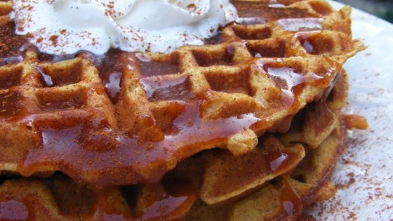
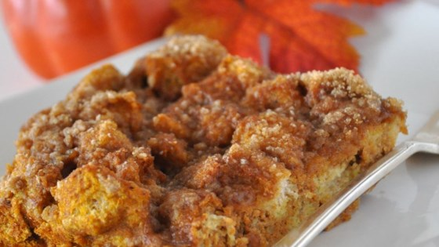

Recipes
Pumpkin Waffles with Apple Cider Syrup

- 2 1/2 cups all-purpose flour
- 4 tsp baking powder
- 4 tsp baking powder
- 2 tsp ground cinnamon
- 1 tsp ground allspice
- 1 tsp ground ginger
- 1/2 tsp salt
- 1/4 cup packed brown sugar
- 1 cup canned pumpkin
- 2 cups milk
- 4 eggs, separated
- 1/4 cup butter, melted
- 1/2 cup white sugar
- 1 tbsp cornstarch
- 1 tsp ground cinnamon
- 1 cup apple cider
- 1 tbsp lemon juice
- 2 tbsp butter
- APPLE CIDER SYRUP:
- Preheat a waffle iron according to manufacturer's instructions.
- Combine the flour, baking powder, cinnamon, allspice, ginger, salt, and brown sugar in a mixing bowl. In a separate bowl, stir together the pumpkin, milk, and egg yolks. Whip the egg whites in a clean dry bowl until soft peaks form
- Stir the flour mixture and 1/4 cup melted butter to the pumpkin mixture, stirring just to combine. Use a whisk or rubber spatula to fold 1/3 of the egg whites into the batter, stirring gently until incorporated. Fold in the remaining egg whites. Cook waffles according to manufacturer's instructions.
- To make the syrup, stir together the sugar, cornstarch, and cinnamon in a saucepan. Stir in the apple cider and lemon juice. Cook over medium heat until mixture begins to boil; boil until the syrup thickens. Remove from heat and stir in the 2 tbsp of butter until melted. Serve warm.
Pumpkin French Toast Bake

- 8 eggs
- 1 tsp vanilla extract
- 2 tsp ground cinnamon
- 1/2 tsp ground cloves
- 1/4 tsp ground nutmeg
- 1tbsp white sugar
- 1(15ounce) can pumplin puree
- 1 loaf Texas toast thick-sliced bread, cut into 1-inch cubes
- 1/3 cup brown sugar
- 1/4 tsp ground cinnamon
- 2 tbsp all-purpose flour
- 1 tbsp butter, softened
- Preheat a waffle iron according to manufacturer's instructions.
- Combine the flour, baking powder, cinnamon, allspice, ginger, salt, and brown sugar in a mixing bowl. In a separate bowl, stir together the pumpkin, milk, and egg yolks. Whip the egg whites in a clean dry bowl until soft peaks form
- Stir the flour mixture and 1/4 cup melted butter to the pumpkin mixture, stirring just to combine. Use a whisk or rubber spatula to fold 1/3 of the egg whites into the batter, stirring gently until incorporated. Fold in the remaining egg whites. Cook waffles according to manufacturer's instructions.
- To make the syrup, stir together the sugar, cornstarch, and cinnamon in a saucepan. Stir in the apple cider and lemon juice. Cook over medium heat until mixture begins to boil; boil until the syrup thickens. Remove from heat and stir in the 2 tbsp of butter until melted. Serve warm.